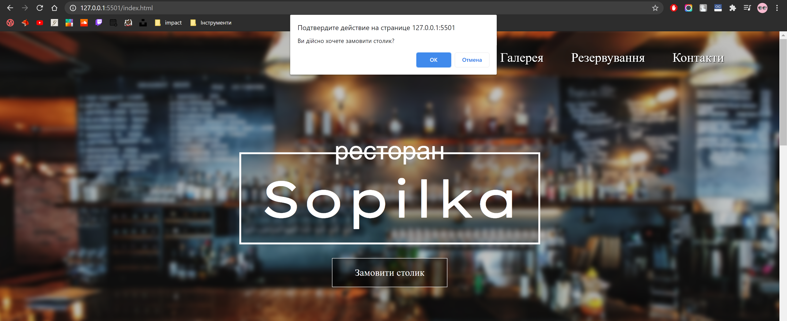
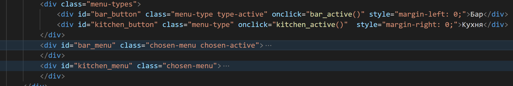
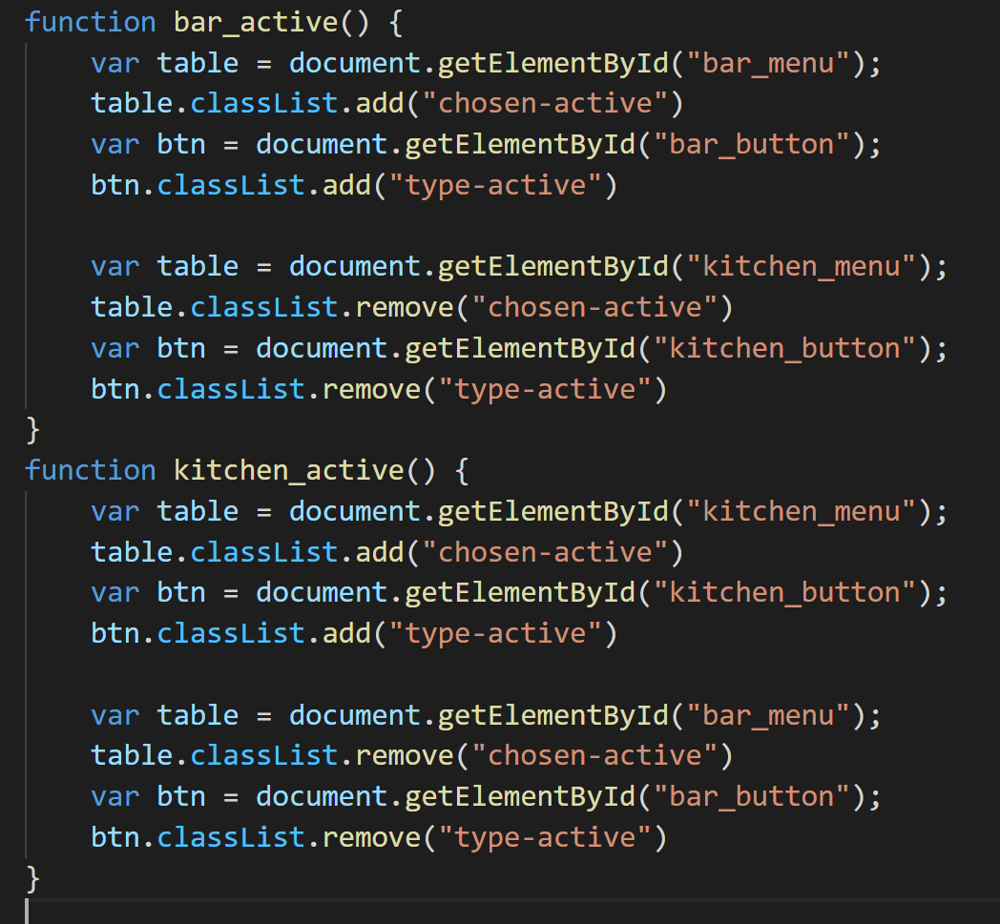
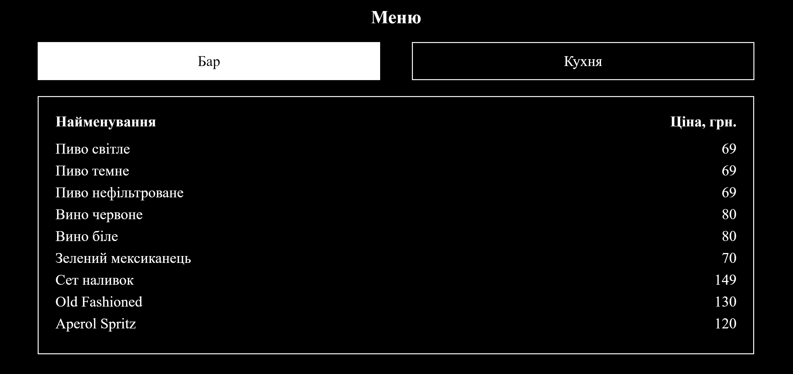
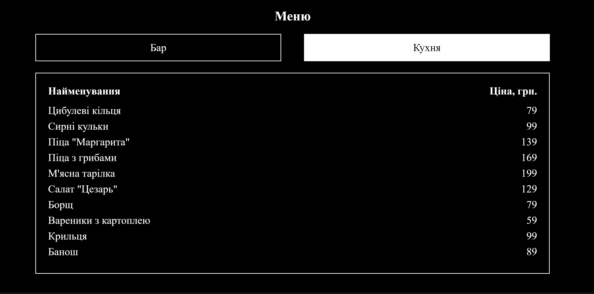
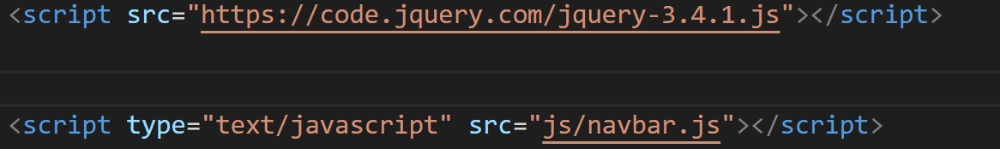
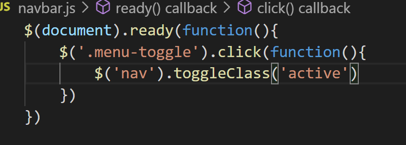
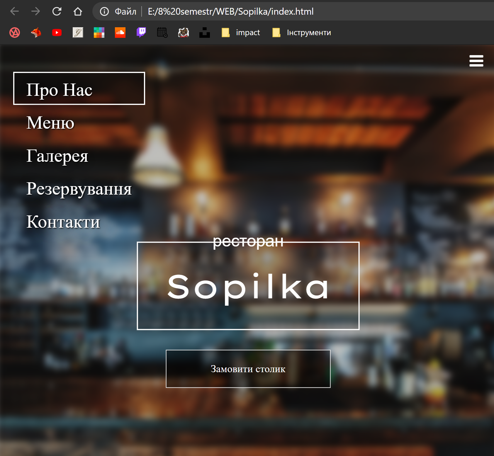

Для виконання завдання поставленого у даній роботі необхідно застосувати 4 способи застосування JS. Кожен із даних способів використовується на нашому сайті. Результати можно перевірити перейшовши на нижні підпункти.
Постановка задачі
Лабораторної роботи №4
-
Способи функціонального
Застосування JavaScript
Схема URL
Обробник подій
Підстановка (entity)
Вставка(SCRIPT)
МАСИВИ(4 пункт)
Виконання 6 пункту
ВИСНОВКИ
Тема: ФУНКЦІОНАЛЬНЕ ЗАСТОСУВАННЯ JAVASCRIPT У HTML-ДОКУМЕНТІ. КЛАСИ,ОБ’ЄКТИ, ФУНКЦІЇ, В МОВІ JAVASCRIPT. ПОДІЇ ТА ОБРОБКА ПОДІЙ. ПРОГРАМНА ВЗАЄМОДІЯ З HTML ДОКУМЕНТАМИ НА ОСНОВІ DOM АРІ
Мета: придбати практичні навички роботи маніпулювання інформаційним вмістом Web-документа засобами мови JavasSript, використання об’єктів,масивів, функцій, подій, обробників подій у сценаріях на мові JavasSript
ХІД ВИКОНАННЯ РОБОТИ
- У звітному HTML-документі розмістити тему та постановку задачі лабораторної роботи №4.
- У власному сайті або на окремій WEB-сторінці, використовучі функції , застосувати 4 способи функціонального застосування JavaScript: гіпертекстове посилання (схема URL); обробник події (handler); підстановка (entity); вставка (тег SCRIPT).
- Розмістити результати виконання та програмний код 2 пункту у звітному HTML-документі, записавши назви файлів HTML-документів.
- Використовуючі сценарій на JavaScript, виконати завдання.
- Розмістити результат виконання та програмний код 4 пункту у звітному HTML-документі.
- Забезпечити виконання завдання згідно із варіантом, сформувати необхідні дані, вбудовані у програму, у вигляді масивів, виконати тестування програми.
- Розмістити результат виконання та програмний код 6 пункту у звітному HTML-документі.
- У власному сайті на свій розсуд застосувати сценарії на JavaScript. Продемонструвати викладачу та відобразити у звітному HTML-документі.
- У звітному HTML-документі оформити звіт лабораторної роблти №4
Для виконання даного завдання був змінений тег 'a'. При натисканні на посилання з'являється форма із запитанням чи необхідно виконати перехід на сторінку замовлення столику.
Код:

Результат:

В даному пункті використовуємо подію натиску на кнопку. У результаті буде змінюватись меню
Код HTML:

Код JS:

Результат 1:

Результат 2:

5
Для виконання буде продемонстровано використання вставки скрипта у форматі файлу.
Код HTML:

Код JS:

Результат:

7
8
9